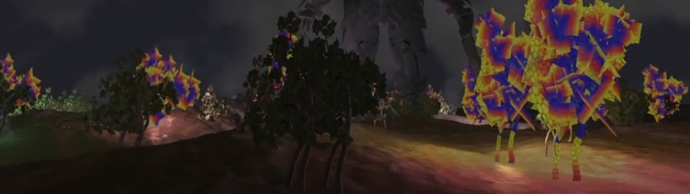
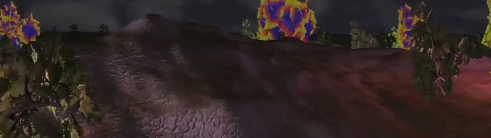

Graphics Project: OpenGL Landscape
Using OpenGL, I have created a graphical scene, displaying a landscape and objects with advanced lighting, mesh animation support and post-processing.
A landscape is generated from a heightmap image, textured based upon the steepness of landscape triangles to produce more visually interesting terrain.
An unlimited number of meshes may be rendered, including support for animated objects and characters.
The scene may be lit by a large number of light sources through the use of deferred rendering, overcoming the limitations of forward rendering.
A split-screen view utilising multiple cameras is possible, along with post-processing options such as blur and sobel edge detection.
Made using OpenGL and C++, in Visual Studio 2019.
A video may be seen below.